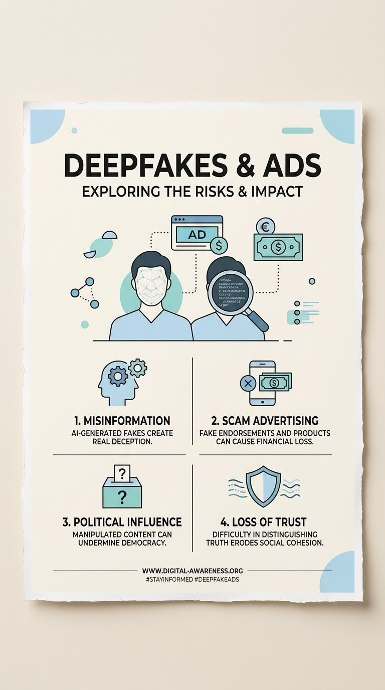
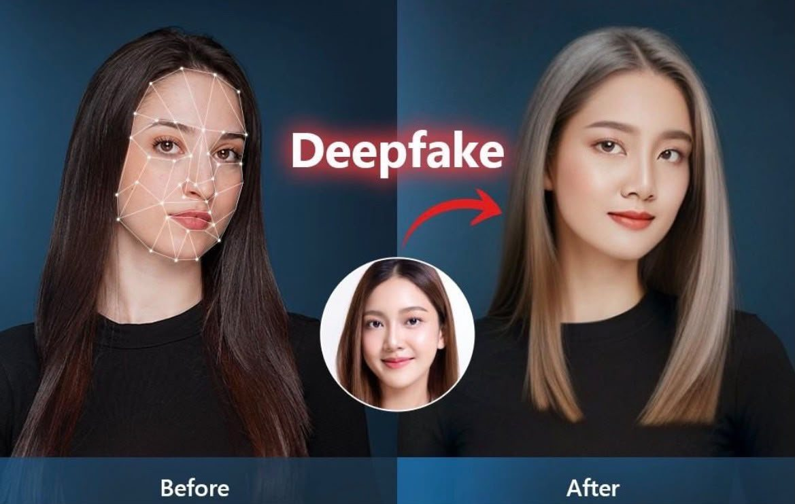
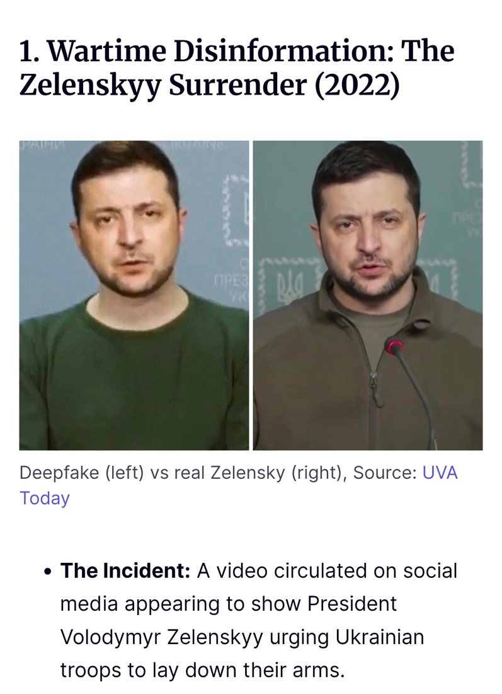
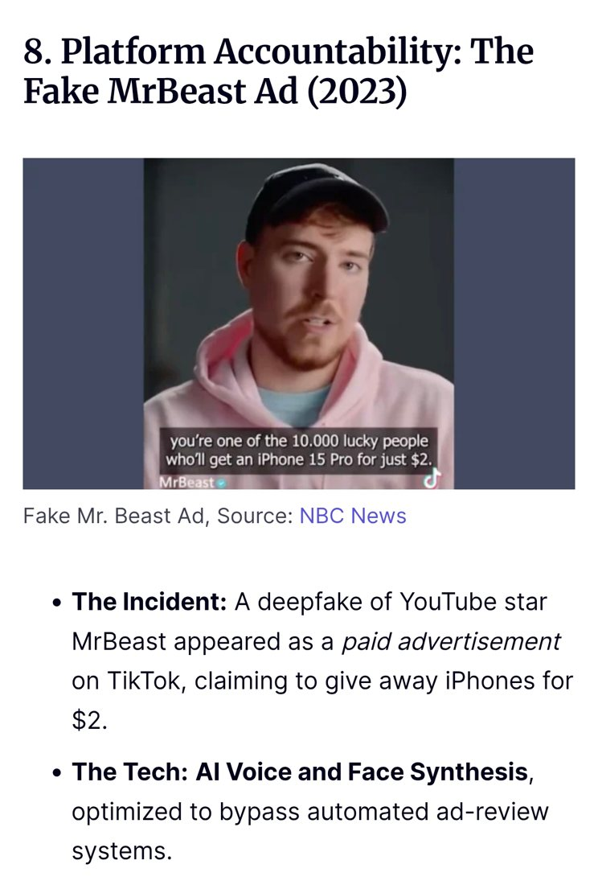
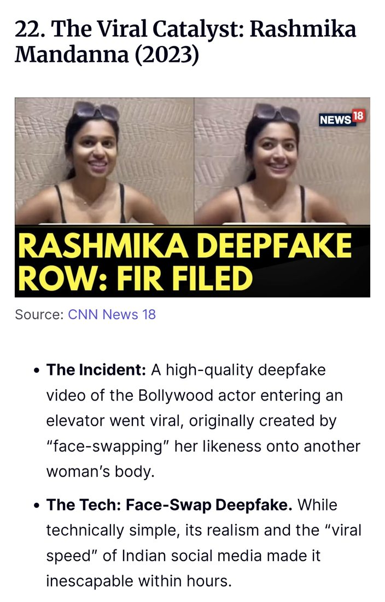

Oszustwa · Lekcja 4 z 12
Deepfake’i i reklamy
Fałszywe twarze, fałszywe głosy, fałszywe okazje
Sprawdź źródło, zanim uwierzysz albo udostępnisz.


01 · Wyjaśnienie
Nie wierzwłasnym oczom.
Czym są deepfake’i?
Deepfake’i to fałszywe filmy, zdjęcia lub nagrania dźwiękowe stworzone przy użyciu sztucznej inteligencji (AI). Mogą sprawić, że ktoś wygląda lub brzmi jak inna osoba.
Przykład: fałszywy film pokazuje znaną osobę mówiącą coś, czego nigdy nie powiedziała.
Czym są oszukańcze reklamy?
Oszukańcze reklamy wykorzystują fałszywe informacje, żeby wprowadzić ludzi w błąd. Mogą próbować wyłudzić pieniądze lub dane osobowe.
Przykład: reklama obiecuje drogi telefon za jedyne 5 €, ale strona to oszustwo.

02 · Prawdziwe przypadki
To jużsię wydarzyło.
Trzy znane przypadki deepfake’ów zebrane przez zespół (materiały po angielsku). Dotknij karty, aby zobaczyć ją w pełnym rozmiarze.






03 · Jak się chronić
Jak możemysię chronić?
Pięć nawyków
- Sprawdź źródło, zanim uwierzysz w film albo go udostępnisz.
- Zwracaj uwagę na dziwne ruchy lub nienaturalną mimikę.
- Omijaj reklamy, które obiecują nierealne zniżki.
- Używaj silnych haseł i uwierzytelniania dwuskładnikowego.
- Zgłaszaj podejrzane filmy i reklamy.
Treści przygotowane przez uczestników podczas szkolenia w Poroninie, październik 2026.
Czas na grę
Dwa kłamstwa,jeden fakt.
Które zdanie jest prawdziwe? Dotknij karty.
Poprawna odpowiedź: zdanie 2 (B). AI potrafi naśladować czyjś głos na podstawie krótkiego nagrania.